Обучение на технического директора — это комплекс программ повышения квалификации и профессиональной переподготовки, которые помогают сформировать управленческие навыки, развить понимание стратегического планирования и научиться выстраивать техническую стратегию компании. Такие курсы включают в себя освоение практических навыков, необходимых для руководителей подразделений и технического руководителя, а также изучение процессов планирования производства, обслуживания оборудования и разработки стратегий развития. Дистанционное обучение представлено в удобном формате, что позволяет совмещать образовательный процесс с профессиональной деятельностью. Мы составили рейтинг программ, где обучение проходит с акцентом на стратегическое управление, разработку программ повышения эффективности производственных подразделений и практическое применение знаний для успешного прохождения курсов и получения диплома.
Информация обновлена:
ТОП онлайн-курсов обучения на Технического Директора (CTO)
- 🏆 Технический директор (СТО). Профессиональная переподготовка — Moscow Business School
- 🏆 Технический директор производства — Русская Школа Управления
- 🏆 CTO / Технический директор — OTUS
- Управление проектами — Академия Eduson (по промокоду onlinekursy скидка 🎁 5%)
- Главный инженер — МИПО (по промокоду onlinekursy действует скидка 🎁 10% )
- Главный инженер — Русская Школа Управления
- Курс «Технический директор — CTO» — Яндекс Практикум
- Технический директор — НЦПО
- Курс СТО: практический тренинг-симулятор — Школа менеджмента «Стратоплан»
- Технический директор производства — Центр сертификации и обучения
- Технический руководитель — Profdocument
- Технический директор проектной компании — PRO-Z.RU
- Главный инженер — МАКПП
Бесплатные курсы по обучению на Технического директора
- «Справочник технического директора» – Школа менеджмента Стратоплан
Отличительные преимущества каждой дистанционной программы обучения на Технического директора
| № | Курс и школа | Отличительные преимущества | |
|---|---|---|---|
| 🥇 | Технический директор (СТО). Профессиональная переподготовка — Moscow Business School | Диплом гос. образца + Diploma Supplement, очный/онлайн формат, карьерные консультации и помощь в трудоустройстве, сильные преподаватели (Набоков, Лазарев), доступ к библиотеке MBS, деловые игры и кейсы | Перейти |
| 🥈 | Технический директор производства — Русская Школа Управления | 5-дневный интенсив (40 акад. часов), 70% практики, бессрочный доступ к материалам, соответствие ФРДО, эксперты PMI, PRINCE2, Agile-Scrum, бережливое производство | Перейти |
| 🥉 | CTO / Технический директор — OTUS | Дистанционный формат с проектными заданиями, доступ к базе работодателей, оплата за счёт компании, обучение у действующих CIO/CTO Avito, TravelLine, стратегический проект в программе | Перейти |
| 4 | Управление проектами — Академия Eduson | 132 урока, 7 кейсов, 30+ тренажёров, курс «Нейросети на практике» в подарок, преподаватель — Ицхак Адизес, два диплома (Eduson и удостоверение), скидка до 60% | Перейти |
| 5 | Главный инженер — Московский институт профессионального образования | 600 часов (6 мес.), диплом с ФИС-ФРДО, BIM-моделирование, международное признание диплома, беспроцентная рассрочка на 24 мес., гибкий темп | Перейти |
| 6 | Главный инженер — Русская Школа Управления | 70% практики, лин-методы (5S, Парето, диаграммы спагетти), SMART для постановки задач, формат на выбор (очно/онлайн/видеокурс), документы гос. образца | Перейти |
| 7 | Курс «Технический директор — CTO» — Яндекс Практикум | Преподаватели — действующие CTO Яндекса, МТС, Uzum, Сбер, 4–6 менторских встреч, кейс-клуб, регулярное обновление программы, карьерный центр | Перейти |
| 8 | Технический директор — НЦПО | Цена от 14 400 ₽, диплом с ФРДО, до 1600 ак. часов, доступ к материалам навсегда, рассрочка 0% до 12 мес., гибкий онлайн-формат | Перейти |
| 9 | Курс СТО: практический тренинг-симулятор — Школа менеджмента «Стратоплан» | Живые занятия без записей, практический симулятор CTO, 90+ кейсов, 75+ часов практики, пожизненный доступ к материалам, преподаватели — лидеры Teamlead Conf и топ-менеджеры | Перейти |
| 10 | Технический директор производства — Центр сертификации и обучения | 72 часа, формат очно/онлайн/заочно, диплом в ФРДО, персональный менеджер, гарантия возврата денег, преподаватели — кандидаты наук, гибкая рассрочка | Перейти |
| 11 | Технический руководитель — Profdocument | Минимальный срок — от 1 дня, цена от 3 200 ₽, удостоверение официального образца, филиалы в 12 городах, документы проходят проверки Ростехнадзора | Перейти |
| 12 | Технический директор проектной компании — PRO-Z.RU | 20 уроков, удостоверение по лицензии № Л035-01257, стоимость со скидкой 44 100 ₽, обучение инженеров-проектировщиков и ГИПов, практические кейсы от CEO компании | Перейти |
| 13 | Главный инженер — МАКПП | Цена от 22 500 ₽, до 1250 часов, формат «Экстернат», налоговый вычет до 15 600 ₽, диплом по ФГОС, поддержка куратора, гибкий дистанционный график | Перейти |
1. 🏆 Технический директор (СТО). Профессиональная переподготовка — Moscow Business School
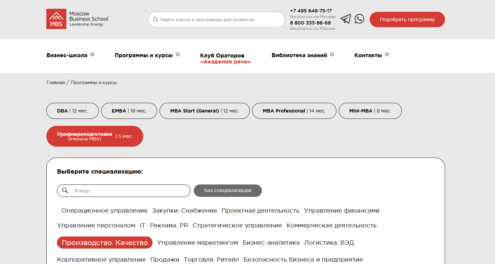- ✅ Официальный сайт: mbschool.ru
- 💸 Цена: 139 000 ₽ (со скидкой 10% при оплате онлайн в течение 3 дней — 125 100 ₽).
- 💳 Рассрочка: доступна на 24 месяца от 5 792 ₽/мес.
- 📚 Формат: очное и дистанционное обучение, видеоматериалы, вебинары, кейсы, электронные библиотеки, тестирование, практика.
- ⏳ Продолжительность: 5 месяцев.
- 📜 Документ: диплом о профессиональной переподготовке + Diploma Supplement.
- 📝 Трудоустройство: карьерные консультации и помощь в трудоустройстве.
- 🔷 Для кого подходит курс: руководителям подразделений, техническим директорам, специалистам производственных предприятий и предпринимателям.
Особенности:
Программа сочетает теоретические знания и практические инструменты, позволяя слушателям освоить управление производственными процессами и техническими аспектами бизнеса. Обучение проходит в удобном формате: очно или дистанционно, что делает курс доступным для занятых специалистов. Программа ориентирована на разработку стратегий и внедрение эффективных методов управления производственными подразделениями. Студенты получают навыки планирования, изучают процессы разработки и обслуживания оборудования, учатся управлять командой и разрабатывать стратегический план для компании. В процессе обучения особое внимание уделяется эффективности производственных систем и оптимизации процессов планирования. По окончании курса слушатель получает диплом государственного образца, который подтверждает соответствие профессиональным стандартам и позволяет претендовать на управленческие должности.
Чему учатся студенты:
- Эффективному управлению производственными процессами
- Стратегическому и операционному менеджменту
- Организации работы технического подразделения
- Оптимизации производственных систем и процессов планирования
- Разработке стратегий и планов для компании
- Применению практических инструментов для управления командой
Преподаватели:
- Набоков Анатолий Борисович — кандидат технических наук, эксперт в стратегическом и операционном управлении, консультант по оптимизации бизнес-процессов
- Лазарев Семен Андреевич — эксперт-практик в области промышленной безопасности, аттестованный эксперт по техническому регулированию, бизнес-тренер
Преимущества:
- Дистанционный формат с возможностью обучения очно
- Диплом государственного образца с европейским приложением
- Карьерные консультации и рекомендации по трудоустройству
- Доступ к базе знаний и библиотеке MBS
- Участие в деловых играх, тренингах и практических кейсах
- Возможность сетевого взаимодействия с другими студентами и преподавателями
Отзывы учеников:
Студенты отмечают высокий уровень преподавателей и практический подход к обучению. Особенно ценят возможность применять полученные знания в работе, удобный дистанционный формат, поддержку кураторов и активное участие в групповых дискуссиях. Многие подчеркивают рост управленческих компетенций и уверенность в профессиональной сфере после окончания курса.
Перейти на официальный сайт курса2. 🏆 Технический директор производства — Русская Школа Управления
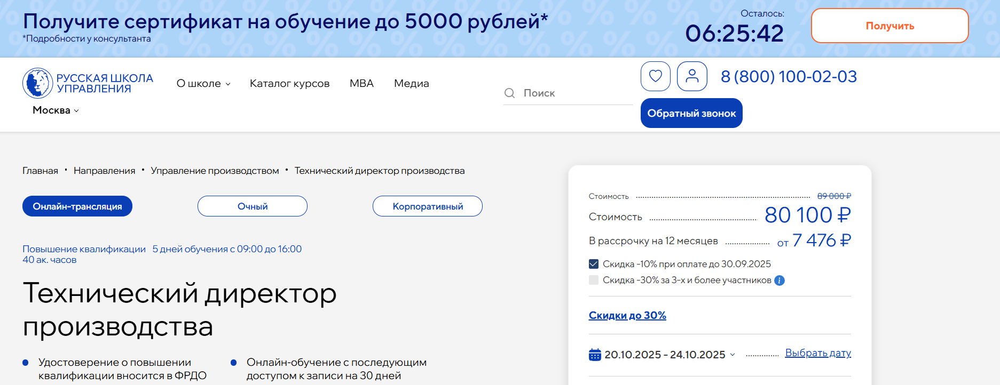- ✅ Официальный сайт: uprav.ru
- 💸 Цена: 80 100 ₽ (полная стоимость — 89 000 ₽).
- 💳 Рассрочка: возможна до 12 месяцевм - 7 476 ₽/мес
- 📚 Формат: очный и дистанционный формат обучения, онлайн-трансляции, видеозаписи, домашние задания, тесты, доступ к материалам в личном кабинете.
- ⏳ Продолжительность: 40 академических часов (5 дней, с 09:00 до 16:00).
- 📜 Документ: удостоверение о повышении квалификации установленного образца (вносится в ФРДО).
- 📝 Трудоустройство: курс повышает профессиональный уровень и востребованность специалистов на рынке труда.
- 🔷 Для кого подходит курс: руководителям подразделений, кандидатам на должность технического директора, сотрудникам производственных предприятий и руководителям отделов.
Особенности:
Образовательная программа ориентирована на специалистов, которые хотят освоить стратегическое управление производственными подразделениями. Обучение проходит в удобном формате: очно в Москве или дистанционно с возможностью пересмотра записей. Программа учитывает профессиональные стандарты и требования современного бизнеса. Участники приобретают управленческие навыки, учатся выстраивать процессы планирования и разрабатывать производственные стратегии. Особое внимание уделяется техническим аспектам, процессу обучения и практическим инструментам, которые можно применить сразу после прохождения курсов. Курс помогает сформировать управленческие компетенции, необходимые для эффективного руководства техническим отделом. По итогам обучения слушатель получает государственный документ, подтверждающий квалификацию.
Чему учатся студенты:
- Контролировать производственные процессы и составлять графики.
- Оптимизировать мощности и внедрять методы технического обслуживания оборудования.
- Управлять проектами на всех стадиях с учетом сроков и бюджета.
- Научиться управлять командой и работать с сопротивлением изменениям.
- Разрабатывать стратегии минимизации рисков и повышения эффективности производства.
Преподаватели:
- Цымбал Андрей Александрович — консультант по инновационным проектам, сертифицированный руководитель проектов (PMI, PRINCE2, Agile-Scrum).
- Стукалов Дмитрий Николаевич — к.т.н., доцент, эксперт по развитию производственных систем и управлению качеством.
- Пупков Владимир Иванович — эксперт по бережливому производству и оптимизации бизнес-процессов.
- Ошкин Александр Александрович — консультант по развитию производственных систем, TPS Certification, член ВОИР.
Преимущества:
- Возможность обучения любым удобным способом — очно или онлайн.
- Содержание программ включает 70% практики и реальные кейсы.
- Бессрочный доступ к материалам курса в личном кабинете.
- Поддержка преподавателей и разбор актуальных задач бизнеса.
- Соответствие образовательным стандартам и включение данных в ФРДО.
- Повышение квалификации и карьерных перспектив после успешного прохождения обучения.
Отзывы учеников:
Слушатели отмечают удобный формат, практическую направленность и компетентность преподавателей. Многие подчеркивают, что обучение проходит динамично, материалы подаются понятно, а полученные знания помогают в реальной работе и стратегическом планировании. Отмечается рост управленческих навыков и повышение эффективности производственных процессов.
Перейти на официальный сайт курса3. 🏆 CTO / Технический директор — OTUS
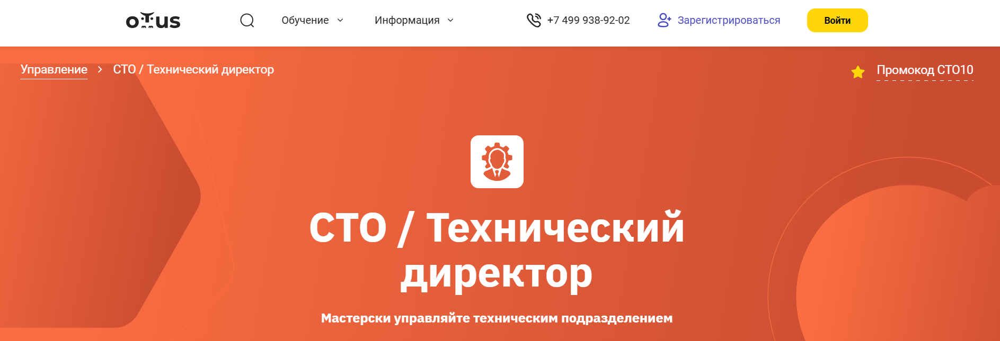- ✅ Официальный сайт: otus.ru
- 💸 Цена: 149 000 ₽
- 💳 Рассрочка: доступна от 12 417 ₽/мес, есть оплата за счёт работодателя
- 📚 Формат: дистанционное обучение, интерактивные вебинары, проектные задания, карьерные мероприятия, доступ к учебным материалам
- ⏳ Продолжительность: 4 месяца (два занятия в неделю)
- 📜 Документ: удостоверение о повышении квалификации государственного образца
- 📝 Трудоустройство: помощь в составлении резюме, доступ к базе работодателей, карьерные консультации
- 🔷 Для кого подходит курс: начинающие и действующие CTO, тимлиды, delivery-менеджеры, руководители проектов и продуктов
Особенности:
Обучение проходит в дистанционным форматом, что делает его удобным форматом для специалистов любого уровня. Студенты осваивают управленческие навыки и навыки планирования, учатся разрабатывать стратегическую и технологическую стратегию, а также управлять техническим подразделением. Программы включают разбор кейсов, проектную работу и стратегическое планирование на разные сроки. Выпускники получают диплом, который соответствует профессиональным стандартам и открывает новые карьерные перспективы. Большое внимание уделяется практическим навыкам и работе с техническими аспектами управления. Форматы обучения включают постоянное взаимодействие с опытными преподавателями и руководителями подразделений. По итогу обучения слушатель получает практические инструменты для руководства и успешное прохождение профессиональной переподготовки.
Чему учатся студенты:
- Разрабатывать стратегический план развития подразделения
- Управлять командой и процессами разработки
- Формировать техническую политику компании
- Оптимизировать производственные процессы
- Выстраивать взаимодействие с руководителями подразделений
- Анализировать и внедрять современные технологии
- Решать управленческие задачи на стратегическом уровне
Преподаватели:
- Александр Ткаченко — CIO в Right Line
- Сергей Фегон — Старший технический менеджер в TravelLine, бывший CTO в заказной разработке
- Александр Пряхин — Tech Unit Lead в Avito
Преимущества:
- Программы повышения квалификации с акцентом на практическую подготовку
- Дистанционное образование с доступом к материалам навсегда
- Обучение у руководителей подразделений и опытных специалистов
- Разработка собственного проекта стратегического развития
- Возможность оплатить обучение за счёт работодателя
- Карьерная поддержка и помощь в трудоустройстве
Отзывы учеников:
Студенты отмечают практическую направленность программы и поддержку опытных специалистов. Подчеркивают, что обучение проходит с разбором реальных кейсов и помогает структурировать знания. Многие выделяют, что программы повышения квалификации позволяют сразу применять знания в профессиональной сфере и повышают эффективность производственных процессов.
Перейти на официальный сайт курса4. Управление проектами — Академия Eduson
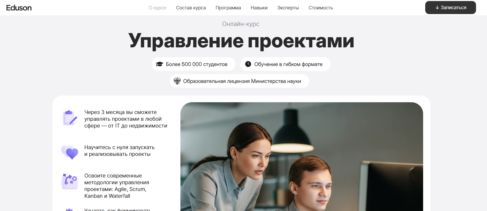- ✅ Официальный сайт: eduson.academy
- 💸 Цена обучения: от 99 000 ₽ со скидкой 60%.
- 💳 Рассрочка: от 4 125 ₽/мес до 24 месяцев без переплат, доступна оплата сразу с доп. скидкой.
- 📚 Формат: дистанционное обучение, видеолекции, кейсы, тесты, тренажёры, дипломный проект.
- ⏳ Продолжительность: 3 месяца.
- 📜 Документ: удостоверение о повышении квалификации и диплом Академии Eduson.
- 📝 Трудоустройство: выпускники получают кейсы для портфолио, диплом о профессиональной подготовке и помощь в актуализации профессиональных навыков.
- 🔷 Для кого подходит курс: начинающим менеджерам проектов, руководителям отделов, продакт-менеджерам и владельцам бизнеса.
Особенности:
Программа создавалась с упором на практику и освоение эффективных методов управления проектами. Все занятия проходят в дистанционным форматом, что позволяет обучаться любым удобным графиком. Форматы обучения включают видеолекции, практику в кейсах и работу с тренажёрами, что помогает развивать как теоретические знания, так и практические навыки. Программа соответствует профессиональным стандартам и современным требованиям рынка. Выпускники получают документы установленного образца, которые подтверждают квалификацию и профессиональный уровень. Курс сочетает стратегическое управление и навыки планирования с современными технологиями, что делает его актуальным для специалистов в разных сферах. Участники проходят обучение под руководством опытных преподавателей и руководителями подразделений, а полученные знания применяются в практической деятельности сразу после окончания курса.
Чему учатся студенты:
- Использовать Agile, Scrum, Kanban и Waterfall для реализации проектов
- Формировать и управлять командой
- Разрабатывать стратегию компании и проектные планы
- Рассчитывать бюджеты и сроки проектов
- Управлять рисками и взаимодействовать с заказчиками
- Вести документацию и презентовать результаты
Преподаватели:
- Ицхак Адизес — мировой эксперт по управлению, основатель института Адизеса, преподаватель Стэнфорда и Колумбийского университета, его методологию применяют Coca-Cola, Bank of America, Volvo
Преимущества:
- Дистанционное образование с доступом навсегда и бесплатными обновлениями
- Программы включают 132 урока, 7 кейсов и более 30 тестов и тренажёров
- Два диплома: удостоверение о повышении квалификации и диплом Академии Eduson
- Курс охватывает стратегические решения и технические аспекты управления проектами
- Поддержка куратора на протяжении всего процесса обучения
- Дополнительный бонус — курс «Нейросети на практике»
Отзывы учеников:
Студенты отмечают удобный формат занятий, качественные учебные материалы и практическую направленность. Многие подчеркивают, что курс помогает получить профессиональные навыки и улучшить управленческие компетенции, а также успешно применять их в работе с командами и проектами.
Перейти на официальный сайт курса5. Главный инженер — Московский институт профессионального образования
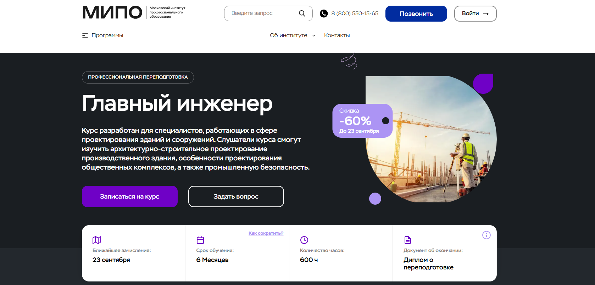- ✅ Официальный сайт: mipo.msk.ru
- 💸 Цена: 53 000 ₽ (со скидкой 60%, вместо 132 600 ₽)
- 💳 Рассрочка: беспроцентная на 24 месяца от 2 208 ₽/мес.
- 📚 Формат: дистанционное обучение, онлайн-вебинары, тестирование, лекции, дополнительные материалы, практические упражнения, общение с кураторами.
- ⏳ Продолжительность: 6 месяцев, 600 часов.
- 📜 Документ: диплом о профессиональной переподготовке с внесением в ФИС-ФРДО.
- 📝 Трудоустройство: возможность карьерного роста, ценность диплома в России и за рубежом.
- 🔷 Для кого подходит курс: инженеры, начинающие специалисты, руководители подразделений, а также те, кто хочет сменить профессию.
Особенности:
Программа создана для специалистов, желающих освоить практические навыки управления техническими аспектами строительства и промышленной безопасности. Образовательный процесс проходит в удобном формате: слушатель получает доступ к онлайн-вебинарам и дополнительным материалам в любое время. Обучение включают разбор реальных кейсов, работу над ошибками после тестирования и поддержку куратора. Курсы помогают в освоении навыков планирования и разработке стратегий для производственных подразделениях. Участники учатся управлять командой, анализировать процессы и внедрять эффективные методы управления. Дистанционный формат обучения позволяет совмещать образовательный процесс с профессиональной деятельностью и проходить обучение в комфортном режиме. Успешное прохождение курса гарантирует слушателям профессиональный уровень, отвечающий современным требованиям.
Чему учатся студенты:
- Определять стоимость проектных и изыскательских работ
- Оформлять проектную документацию
- Осваивать нормативно-правовые основы проектирования
- Изучать систему нормативных документов в строительстве
- Применять цифровое и BIM-моделирование
- Контролировать строительные процессы и вести авторский надзор
Преподаватели:
- Морозов Сергей Александрович — главный инженер, директор компании
- Бовтрикова Елена Владиславовна — главный инженер, кандидат технических наук
- Геллер Юлия Александровна — кандидат технических наук, эксперт по металлическим, деревянным и железобетонным конструкциям
Преимущества:
- Дистанционное образование с доступом к записям лекций
- Диплом государственного образца, внесённый в федеральный реестр
- Преподавание опытными специалистами и практиками
- Гибкий график обучения с любым удобным темпом
- Рассрочка без переплат до 24 месяцев
- Международное признание выданных дипломов
Отзывы учеников:
Студенты отмечают удобный формат онлайн-занятий, поддержку кураторов и доступность материалов. Чаще всего хвалят возможность совмещать обучение с работой, качественные учебные программы и практическую пользу полученных знаний для дальнейшей карьеры.
Перейти на официальный сайт курса6. Главный инженер — Русская Школа Управления
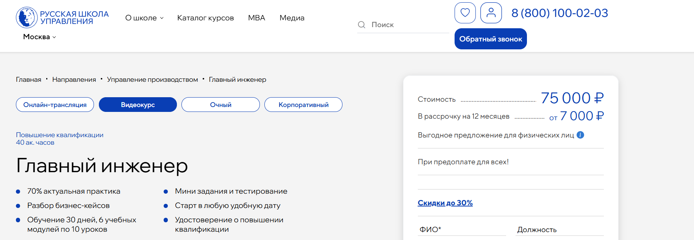- ✅ Официальный сайт: uprav.ru
- 💸 Цена: от 75 000 ₽
- 💳 Рассрочка: 7 000 ₽/мес до 12 месяцев
- 📚 Формат: дистанционное обучение, видеоуроки, мини-задания, тесты, онлайн-трансляции, очные занятия
- ⏳ Продолжительность: от 30 до 180 дней
- 📜 Документ: удостоверение о повышении квалификации государственного образца
- 📝 Трудоустройство: повышение профессионального уровня, карьерный рост
- 🔷 Для кого подходит курс: для руководителей подразделений, специалистов технического отдела, сотрудников производственных предприятий и компаний
Особенности:
Программа помогает освоить управленческие компетенции и практические навыки для работы на должности технического руководителя. Обучение проходит в удобном формате: студенты выбирают очные занятия, онлайн-трансляции или видеокурс. Слушатели изучают ключевые аспекты стратегического планирования, организацию технического обслуживания оборудования и оптимизацию процессов планирования производства. Образовательный процесс включает разбор бизнес-кейсов, использование инструментов бережливого производства и проектного менеджмента. Курс направлен на развитие навыков планирования, эффективное управление персоналом и выстраивание производственных стратегий. Участники получают опыт взаимодействия с техническими аспектами управления и стратегическими решениями. Успешное прохождение обучения гарантирует выдачу документа государственного образца.
Чему учатся студенты:
- Разрабатывать стандарты по нормированию труда и рассчитывать численность персонала
- Проводить оперативное планирование и контроль производственных процессов
- Внедрять лин-методы, включая 5S, Парето, диаграммы спагетти
- Планировать загрузку и контролировать использование оборудования
- Организовывать техническое обслуживание и планово-предупредительные ремонты
- Использовать модель SMART для постановки задач
Преподаватели:
- Ошкин Александр Александрович — консультант по развитию производственных систем, TPS Certification, член ВОИР
- Пупков Владимир Иванович — эксперт по бережливому производству, оптимизации бизнес-процессов с применением Lean-технологий
- Котович Борис Анатольевич — предприниматель, бизнес-тренер, более 35 лет производственного опыта
Преимущества:
- 70% практики и 30% теории
- Обучение в дистанционном формате с любым удобным графиком
- Преподаватели — опытные специалисты с практическим опытом в компаниях
- Документы о квалификации государственного образца с защитой от подделки
- Возможность выбора формата обучения: очный, онлайн или видеокурс
- Рассрочка до 12 месяцев
Отзывы учеников:
Слушатели отмечают насыщенную программу, практические задания и удобный формат. По отзывам студентов, обучение помогает выстраивать техническую стратегию, управлять командой и применять современные методы планирования. Многие указывают на высокое качество преподавателей и реальную пользу полученных знаний для производственных подразделений.
Перейти на официальный сайт курса7. Курс «Технический директор — CTO» — Яндекс Практикум
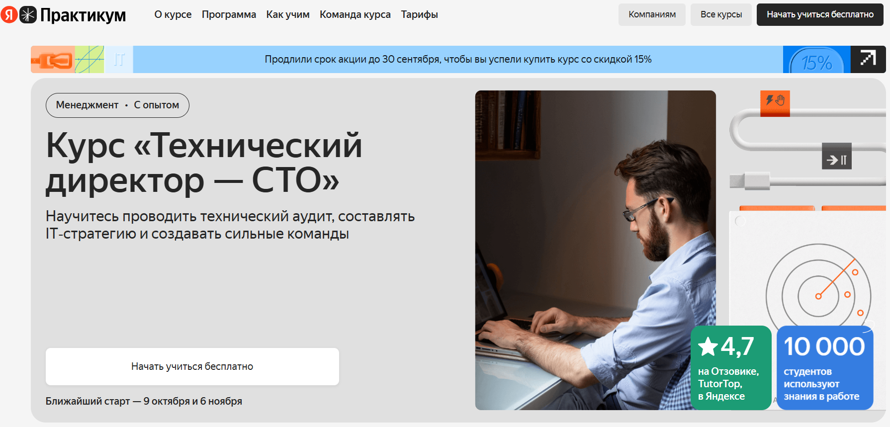- ✅ Официальный сайт: practicum.yandex.ru
- 💸 Цена обучения: стоимость зависит от выбранного тарифа, действует скидка 15% от 149 500 ₽
- 💳 Рассрочка: доступна от 6 103 ₽/мес, можно оплатить курс частями или через работодателя.
- 📚 Формат: дистанционное обучение: видеолекции, практические задания, тесты, индивидуальные встречи с менторами и воркшопы.
- ⏳ Продолжительность: 4–6 месяцев, 6–8 часов в неделю.
- 📜 Документ: удостоверение о повышении квалификации установленного образца.
- 📝 Трудоустройство: поддержка карьерного центра, помощь в поиске работы и оформлении документов.
- 🔷 Для кого подходит курс: тимлидам, техническим специалистам, действующим руководителям подразделений и кандидатам на должность технического директора.
Особенности:
Программа построена в удобном формате, который сочетает гибкость дистанционного образования и строгие дедлайны для успешного прохождения обучения. Студенты учатся разрабатывать стратегии организации и техническую политику компании, управлять персоналом и производственными подразделениями. Большая часть занятий посвящена практическим инструментам, которые помогают отработать управленческие задачи и освоить эффективные методы работы. Программа обновляется каждые полгода, чтобы соответствовать современным технологиям и профессиональным стандартам. После окончания курса слушатель получает документ о профессиональной переподготовке, который принимается работодателями.
Чему учатся студенты:
- Проводить технический аудит и управлять техническим обслуживанием
- Разрабатывать стратегический план и технологическую стратегию компании
- Управлять командой и процессами планирования
- Контролировать эффективность производственных процессов
- Использовать методы анализа, проектный менеджмент и современные технологии
- Принимать стратегические решения для повышения эффективности бизнеса
Преподаватели:
- Илья Лосев — Ex-CTO в Яндекс Crowd и Сбере, 10+ лет в управлении IT-проектами
- Иван Мясников — CTO в Uzum Fintech, ex-CTO в МТС и СберЗвуке, 12+ лет опыта
- Владимир Цуканов — СТО в Яндексе, 15+ лет опыта, отвечает за проекты Кинопоиска
- Евгений Рейх — CTO монетизации в Яндекс Картах, 20+ лет разработки
- Александр Апазиди — CTO/CIO, более 30 лет опыта в крупных компаниях
- Ринат Магров — Технический лидер в Webvork, формировал команды из 100+ человек
- Денис Макрушин — CPO сервисов безопасной разработки в Яндексе, 15+ лет в кибербезопасности
- Алексей Субботин — CPD, CTO в «Деловой среде», кандидат физико-математических наук
Преимущества:
- Дистанционный формат обучения с гибким графиком
- Практика на реальных кейсах и обратная связь от экспертов
- 4–6 индивидуальных встреч с менторами входят в стоимость
- Возможность посещать кейс-клуб и воркшопы
- Поддержка карьерного центра и помощь с трудоустройством
- Преподаватели — действующие CTO крупных компаний
- Программа соответствует профессиональным стандартам и регулярно обновляется
Отзывы учеников:
Студенты отмечают высокий уровень преподавания, практическую направленность занятий и удобный формат дистанционного образования. Отдельно подчеркивают ценность индивидуальных встреч с менторами и актуальность знаний, которые можно применять в работе сразу после прохождения курсов.
Перейти на официальный сайт курса8. Технический директор — НЦПО
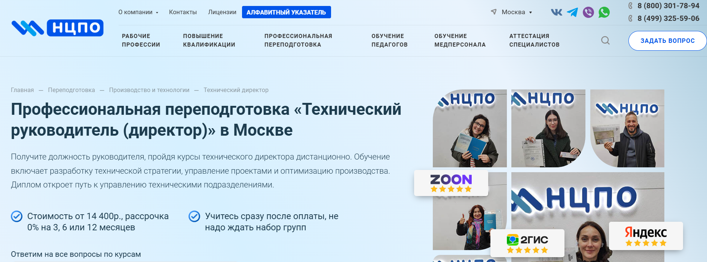- ✅ Официальный сайт: ncpo.ru
- 💸 Цена: от 14 400 ₽ (скидка 2 500 ₽ при оплате в день заказа).
- 💳 Рассрочка: 0% на 3, 6 или 12 месяцев, от 1 200 ₽/мес.
- 📚 Формат: дистанционное обучение, доступ к материалам 24/7, лекции, практические задания, тестирование без ограничений.
- ⏳ Продолжительность: 250–1600 ак. часов.
- 📜 Документ: диплом о профессиональной переподготовке с внесением данных в ФРДО.
- 📝 Трудоустройство: подтверждение квалификации и возможность назначения на должность руководителя подразделений.
- 🔷 Для кого подходит курс: для специалистов, желающих повысить профессиональный уровень, освоить стратегическое управление и получить диплом для продвижения по карьерной лестнице.
Особенности:
Программа создана для тех, кто планирует развивать управленческие компетенции и навыки планирования в техническом руководстве. Обучение проходит дистанционным форматом, что позволяет совмещать процессу обучения с работой. Слушатели осваивают разработку стратегий, управление проектами и техническую политику компании. Курсы включают практические навыки и теоретические знания, которые помогают управлять командой и повышать эффективность производства. Образовательный процесс построен на удобных форматах обучения, студенты получают доступ к учебным материалам навсегда. По окончании курса слушатель получает диплом установленного образца, подтверждающий профессиональную подготовку и соответствие профессиональным стандартам. Это позволяет успешно руководить техническим отделом и службами технического обслуживания на предприятиях. Официальный договор гарантирует прозрачность и юридическую защиту студентов.
Чему учатся студенты:
- Разрабатывать техническую стратегию и стратегический план компании
- Организовывать работу технического подразделения и управлять персоналом
- Оптимизировать производственные процессы и процессы планирования
- Решать задачи по техническому обслуживанию и эксплуатации оборудования
- Применять эффективные методы управления проектами и ресурсами
- Формировать стратегическое управление и производственные стратегии
Преподаватели:
- Информация о преподавателях уточняется на официальном сайте учебного центра
Преимущества:
- Гибкое дистанционное обучение в удобном формате
- Доступ к образовательной платформе и материалам курса навсегда
- Официальный диплом о переподготовке с регистрацией в ФРДО
- Рассрочка 0% без переплат
- Программа соответствует профессиональным стандартам
- Возможность совмещать обучение с работой
Отзывы учеников:
Слушатели отмечают удобный формат дистанционного образования, доступность материалов 24/7 и оперативную поддержку менеджеров. Положительно отзываются о практических заданиях и четкой организации учебного процесса. Многие подчеркивают, что программа позволила повысить квалификацию и получить должность технического руководителя.
Перейти на официальный сайт курса9. Курс СТО: практический тренинг-симулятор — Школа менеджмента «Стратоплан»
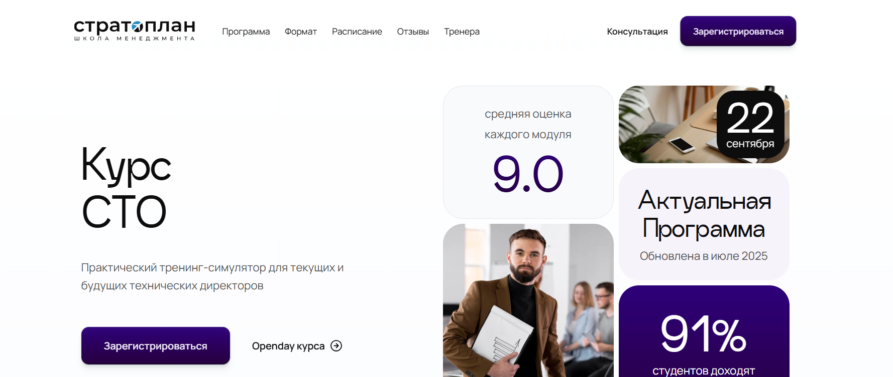- ✅ Официальный сайт: stratoplan-school.com
- 💸 Цена обучения: от 5 000 €.
- 💳 Рассрочка: доступна от 1100 €/мес , при выборе итоговая сумма увеличивается на 10%.
- 📚 Формат: живые онлайн-занятия без записей, практический симулятор, домашние задания, кейсы и разборы.
- ⏳ Продолжительность: более 75 часов теории и практики, 16 основных занятий и 4 дополнительных модуля.
- 📜 Документ: диплом о профессиональной переподготовке установленного образца.
- 📝 Трудоустройство: курс помогает подготовиться к должности технического директора и работе с управленческими задачами.
- 🔷 Для кого подходит курс: для руководителей подразделений, тимлидов, менеджеров проектов и кандидатов технических специальностей, планирующих рост в управлении.
Особенности:
Программа разработана специально для подготовки технического руководителя, которому необходимо уверенно управлять командой и внедрять техническую стратегию компании. Обучение проходит в дистанционным форматом, что дает возможность совмещать процессу обучения с работой. Студенты проходят более 90 кейсов для отработки практических навыков и осваивают эффективным методам стратегического планирования. Курс построен на реальных примерах из производственных подразделениях и помогает развить управленческие компетенции. По окончании обучения слушатель получает профессиональный уровень подготовки и может претендовать на руководящие должности технического отдела. Весь образовательный процесс поддерживается опытными преподавателями и живыми тренерами. Доступ к материалам предоставляется пожизненно, что позволяет возвращаться к ключевым аспектам программы в удобный формат.
Чему учатся студенты:
- Разрабатывать и внедрять техническую стратегию компании
- Выстраивать процессы планирования и управления производственными процессами
- Решать конфликты и управлять персоналом подразделения
- Повышать эффективность производственных систем и оптимизацию процессов
- Формировать стратегический план развития технического подразделения
- Использовать практические инструменты для управления проектами и командами
Преподаватели:
- Илья Прахт: Руководитель программного комитета конференции Teamlead Conf.
- Роман Ивлиев: Эксперт в управлении командами и техническом руководстве.
- Кирилл Линник: Специалист по корпоративным финансам, риск-менеджменту и управленческому учету.
- Антон Корчинский: Эксперт в области лидерства и развития руководителей.
- Александр Апазиди: Эксперт в управлении ИТ и цифровой трансформации.
- Андрей Менде: Специалист по управлению архитектурами и инфраструктурами технических подразделений.
- Антон Савочка: Эксперт по обучению и развитию тимлидов, более 10 лет в бизнес-образовании.
Преимущества:
- Живой формат занятий без записей, с постоянной обратной связью
- Пожизненный доступ к учебным материалам
- Практический симулятор работы технического директора
- Программа включает более 90 практических кейсов
- Возможность развить навыки стратегического планирования
- Обучение проходит в удобным формате онлайн-сессий
- Поддержка опытных специалистов на каждом этапе прохождения курсов
Отзывы учеников:
Студенты отмечают высокий уровень преподавателей, практическую направленность и удобный формат обучения. Чаще всего подчеркивают, что обучение позволяет освоить управленческие навыки, необходимые для стратегическому развитию компании, и получить практический опыт работы с техническими аспектами в безопасной среде.
Перейти на официальный сайт курса10. Технический директор производства — Центр сертификации и обучения
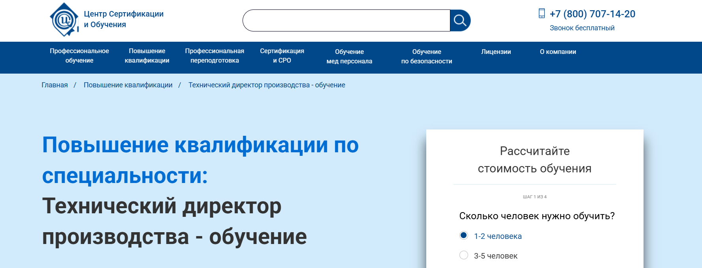- ✅ Официальный сайт: usart.ru
- 💸 Цена: 12 500 ₽ (вместо 15 500 ₽ при оплате в день заказа).
- 💳 Рассрочка: от банков Тинькофф и ОТП, от 2 083 ₽/мес на 3 или 6 месяцев, без процентов.
- 📚 Формат: дистанционное обучение, очно с практикой или заочно; видеолекции, методические материалы, доступ к онлайн-платформе, тесты.
- ⏳ Продолжительность: 72 часа, срок индивидуальный.
- 📜 Документ: удостоверение о повышении квалификации установленного образца, внесение в реестр ФРДО.
- 📝 Трудоустройство: удостоверение принимается работодателями, соответствует профстандартам.
- 🔷 Для кого подходит курс: специалистам с дипломом среднего специального или высшего образования, руководителям подразделений и сотрудникам производственных предприятий.
Особенности:
Обучение проходит с акцентом на развитие профессиональных навыков управления техническим подразделением и формирование стратегического мышления. Удобный формат занятий позволяет совмещать учебу с работой и личными делами. Программа включает изучение стратегического планирования, процессов разработки и управления персоналом. Студенты получают практические навыки в обслуживании оборудования и освоении методов анализа производственных процессов. Дистанционным форматом можно воспользоваться в любом регионе, а очные занятия дают практический опыт работы с техническими аспектами. По окончании курса слушатель получает полный пакет документов и подтвержденный уровень квалификации. Доступ к образовательным платформам и постоянная поддержка преподавателей повышают эффективность обучения.
Чему учатся студенты:
- Навыкам стратегического планирования и разработке программ развития
- Управлению производственными подразделениями и процессами планирования
- Практическим методам организации обслуживания оборудования
- Разработке производственных стратегий и эффективному использованию ресурсов
- Ведению документации и управлению командой
Преподаватели:
- Мазуров Алексей Валерьевич — кандидат технических наук, эксперт по управлению производственными процессами
- Красавцева Наталия Георгиевна — специалист в области экономического планирования
- Гришина Марина Викторовна — практикующий преподаватель по управленческим дисциплинам
- Голощапов Алексей Михайлович — эксперт по стратегическому развитию
- Фролова Екатерина Владимировна — кандидат технических наук, практик в сфере управления персоналом
- Межникова Юлия Львовна — преподаватель с опытом в проектном менеджменте
- Шестакова Екатерина Владимировна — специалист по анализу производственных процессов
- Некрасов Илья Александрович — практикующий руководитель технического отдела
- Шануренко Игорь Александрович — эксперт в области стратегического управления
Преимущества:
- Гибкие форматы обучения — онлайн, очно и заочно
- Возможность рассрочки без процентов
- Документы заносятся в государственный реестр ФРДО
- Соответствие программ профессиональным стандартам
- Опытные преподаватели с практическим стажем
- Персональный менеджер для сопровождения на всех этапах
- Гарантия возврата средств в случае неподходящего удостоверения
Отзывы учеников:
Студенты отмечают удобный формат дистанционного обучения, доступность материалов и поддержку преподавателей. Многие выделяют практическую направленность программы и возможность совмещать учебу с работой. Положительно оценивается и то, что документы официально признаются работодателями.
Перейти на официальный сайт курса11. Технический руководитель — Profdocument
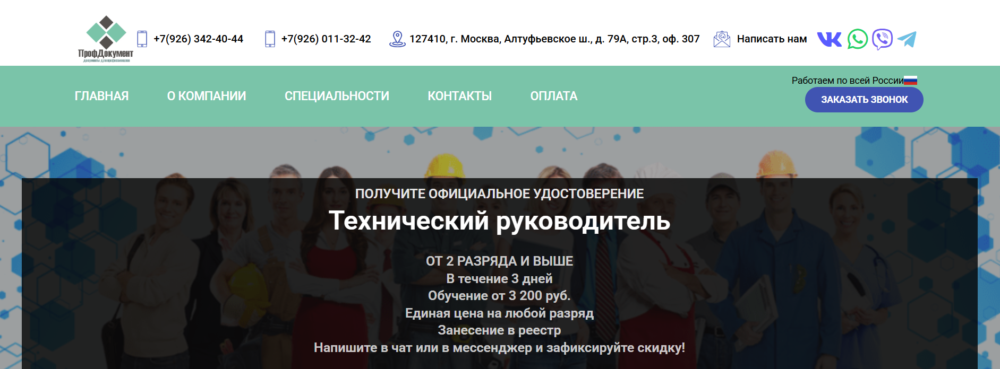- ✅ Официальный сайт: profdocument.ru
- 💸 Цена обучения: от 3 200 ₽, единая стоимость на любой разряд.
- 💳 Рассрочка: уточняется при обращении.
- 📚 Формат: дистанционное обучение, включает тесты, консультации и практические задания.
- ⏳ Продолжительность: от 1 до 3 рабочих дней.
- 📜 Документ: официальное удостоверение установленного образца, занесение в реестр.
- 📝 Трудоустройство: документы соответствуют требованиям Минтруда и Ростехнадзора, подходят для проверки работодателями.
- 🔷 Для кого подходит курс: руководителям подразделений, специалистам технических отделов, кандидатам на должность руководителя, а также организациям и частным лицам.
Особенности:
Программа создана для тех, кто стремится повысить профессиональный уровень и получить документы, соответствующие стандартам качества. Обучение проходит в удобном формате, а дистанционным форматом можно пользоваться из любого региона России. В процессе студенты осваивают навыки планирования и управления производственными процессами, изучают разработку стратегий и управление персоналом. Курс охватывает ключевые аспекты технического руководства, включая стратегическое управление и организацию процессов обслуживания оборудования. Участники получают практические навыки и знания, которые помогают управлять командой и разрабатывать эффективные производственные стратегии. Успешное прохождение курса позволяет выпускникам уверенно работать с техническими аспектами и эффективно решать управленческие задачи. Документы, выдаваемые после обучения, соответствуют профессиональным стандартам и действительны по всей территории РФ.
Чему учатся студенты:
- Навыкам планирования и управления техническими подразделениями
- Разработке стратегий и производственных планов
- Организации процессов технического обслуживания и ремонта
- Эффективному управлению персоналом и распределению задач
- Анализу ключевых аспектов стратегического планирования
- Повышению эффективности производственных процессов
Преподаватели:
- Опытные специалисты с практическим опытом в техническом руководстве и управлении производственными подразделениями
- Преподаватели с опытом руководства проектами и реализации производственных стратегий
Преимущества:
- Официальное оформление документов, проходящих проверки
- Минимальные сроки прохождения обучения — от 1 дня
- Возможность обучаться в дистанционном формате
- Поддержка организаций и льготы для физических лиц
- Опытные преподаватели и современные форматы обучения
- Филиалы в 12 городах России
Отзывы учеников:
Слушатели отмечают быстрые сроки прохождения курсов, удобный формат обучения и официальные документы, которые принимают работодатели. Многие подчеркивают индивидуальный подход и готовность специалистов помочь в решении любых вопросов, связанных с профессиональной переподготовкой.
Перейти на официальный сайт курса12. Технический директор проектной компании — PRO-Z.RU
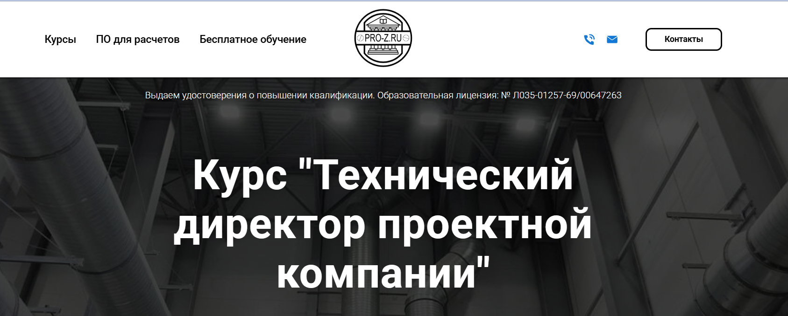- ✅ Официальный сайт: pro-z.ru
- 💸 Цена обучения: 44 100 ₽ (63 000 ₽ без скидки).
- 💳 Рассрочка: от 4 410 ₽ в месяц.
- 📚 Формат: дистанционное обучение с видеолекциями, заданиями и практикой.
- ⏳ Продолжительность: 20 уроков.
- 📜 Документ: удостоверение о повышении квалификации (образовательная лицензия № Л035-01257-69/00647263).
- 📝 Трудоустройство: повышение профессионального уровня и востребованности на рынке труда.
- 🔷 Для кого подходит курс: инженерам-проектировщикам, помощникам и действующим ГИПам, техническим директорам, генеральным директорам проектных и строительных компаний.
Особенности:
Программа дает слушателям практические навыки стратегического планирования и управления техническим подразделением. Обучение проходит в дистанционном формате, что обеспечивает удобный формат для специалистов из любых регионов. Слушатели получают знания о разработке стратегий, процессах планирования и управлении персоналом. Программа охватывает ключевые аспекты производственных процессов и эффективность производственных подразделений. После прохождения курсов выпускники умеют управлять командой и внедрять эффективные методы в работе. Слушатели знакомятся с обязанностями технического руководителя и методами управления проектами. По окончании обучения выдаются удостоверения установленного образца, подтверждающие квалификацию.
Чему учатся студенты:
- Разработке технической стратегии и стратегического плана
- Управлению производственными подразделениями и процессами разработки
- Навыкам планирования и стратегическому управлению
- Эффективному взаимодействию с руководителями подразделений
- Техническому обслуживанию и оптимизации процессов
Преподаватели:
- Белугин Григорий Викторович — генеральный директор pro-z.ru, практический опыт управления проектными и строительными компаниями
Преимущества:
- Дистанционный формат позволяет проходить обучение в удобное время
- Программы включают практические инструменты и реальные кейсы
- Удостоверение о повышении квалификации соответствует профессиональным стандартам
- Опытные преподаватели делятся знаниями о технических аспектах управления
- Рассрочка и персональные скидки при обучении нескольких сотрудников
- Обучение проходит с учетом требований бизнеса и стандартов качества
Отзывы учеников:
Слушатели отмечают доступный стиль преподавания и практическую направленность материала. Многие подчеркивают пользу от изучения управленческих навыков и инструментов планирования. Отмечают, что курс помогает повысить профессиональную подготовку и дает понимание технических аспектов работы в проектных компаниях.
Перейти на официальный сайт курса13. Главный инженер — Международная Академия Компетенций и Профессиональной Переподготовки
- ✅ Официальный сайт: makpp.ru
- 💸 Цена: 22 500 ₽ (со скидкой 19 000 ₽ при оплате в течение 10 дней).
- 💳 Рассрочка: доступна от 7 500 ₽ в месяц.
- 📚 Формат: дистанционное обучение с лекциями, тестами, аттестацией и поддержкой куратора.
- ⏳ Продолжительность: от 320 до 1 250 часов, оптимально — 3 месяца (520 часов).
- 📜 Документ: диплом о профессиональной переподготовке по ФГОС.
- 📝 Трудоустройство: диплом соответствует профессиональным стандартам и повышает шансы на карьерный рост.
- 🔷 Для кого подходит курс: для специалистов технического подразделения, руководителей отделов и менеджеров проектов, стремящихся повысить профессиональный уровень.
Особенности:
Программа рассчитана на специалистов, которым необходимо освоить навыки планирования и управления производственными процессами. Обучение проходит в дистанционном формате, что позволяет совмещать образовательный процесс с работой. Курс дает знания по разработке стратегий и управлению техническими аспектами на стратегическом уровне. Слушатели изучают ключевые задачи технического руководителя, включая разработку программ, управление персоналом и повышение эффективности производства. Учебный план соответствует требованиям профессиональных стандартов и предусматривает практические инструменты для решения управленческих задач. По окончании обучения выдается диплом, подтверждающий квалификацию. Возможна рассрочка и налоговый вычет, что делает процесс обучения удобным и доступным.
Чему учатся студенты:
- Разрабатывать и внедрять производственные стратегии
- Управлять командой и руководить подразделениями
- Планировать и контролировать процессы разработки
- Применять методы анализа и проектного менеджмента
- Разрабатывать стратегические решения и планы
- Контролировать техническое обслуживание оборудования
Преподаватели:
- Обучение ведут опытные специалисты Академии с практическим опытом работы в инженерной сфере и подготовкой по ФГОС
Преимущества:
- Гибкие форматы обучения для слушателей из любой точки России
- Соответствие образовательных программ профессиональным стандартам
- Возможность получить диплом быстрее благодаря формату «Экстернат»
- Доступные цены и рассрочка
- Поддержка куратора на протяжении всего процесса обучения
- Налоговый возврат до 15 600 ₽
Отзывы учеников:
Студенты отмечают удобный формат обучения, доступные цены и полезные учебные материалы. Выпускники подчеркивают, что программа помогает освоить практические навыки и применить их на работе. Отдельно выделяют опытных преподавателей, которые помогают успешно пройти обучение и получить диплом.
Перейти на официальный сайт курсаБесплатный курс по обучению на Технического директора
«Справочник технического директора» – Школа менеджмента Стратоплан
✅ Официальный сайт: stratoplan-school.comОписание и особенности:
- Обучение проходит в дистанционном формате с возможностью подключаться из любого удобного места.
- Программа помогает техническому директору освоить ключевые управленческие навыки и научиться выстраивать техническую стратегию компании.
- Занятия посвящены обязанностям технического руководителя, роли CTO и первым шагам после назначения на должность.
- Разбираются кейсы по работе с командой, стратегическому планированию и повышению эффективности производственных подразделений.
- Форматы обучения включают разбор 16 реальных управленческих ситуаций и методы решения типовых задач.
- Спикеры делятся опытом управления персоналом и показывают, как выстраивать техническую политику и обслуживать оборудование.
- Практические инструменты помогут руководителям подразделений успешно справляться с управленческими вызовами.
- После прохождения курса слушатель получает уверенность в своих действиях и практические навыки планирования.
- Занятия проходят по четвергам в августе, всего 4 онлайн-сессии с суммарной продолжительностью более 6 часов.
- Курс станет основой для дальнейшего повышения квалификации и профессионального развития в техническом руководстве.
Кто такой технический директор?
Технический директор (CTO, Chief Technical Officer) — это руководитель высшего звена, который отвечает за технологическую стратегию компании, развитие IT-инфраструктуры, внедрение инноваций и контроль качества технических процессов. Он является связующим звеном между бизнес-целями и технической реализацией.
Что делают CTO (Chief Technical Officer) и чем занимаются?
Задачи CTO могут отличаться в зависимости от размера компании и отрасли, но основные направления деятельности остаются схожими:
- Формирование и реализация технической стратегии компании.
- Контроль разработки и внедрения программных решений.
- Обеспечение надежности и безопасности IT-инфраструктуры.
- Управление командой разработчиков, инженеров и других технических специалистов.
- Анализ новых технологий и их внедрение в бизнес-процессы.
- Оптимизация затрат на технологии и инфраструктуру.
- Взаимодействие с другими топ-менеджерами для достижения целей компании.
Что должен знать и уметь технический директор?
Успешный CTO должен сочетать глубокие технические знания с лидерскими и стратегическими навыками. Среди ключевых компетенций:
- Знание современных языков программирования и архитектуры ПО.
- Понимание принципов кибербезопасности и защиты данных.
- Опыт управления крупными проектами и командами.
- Навыки финансового планирования и контроля IT-бюджета.
- Знание Agile, Scrum, DevOps и других методологий разработки.
- Умение предсказывать технологические тренды и внедрять инновации.
- Развитые коммуникативные и лидерские качества.
Востребованность и зарплаты CTO (Chief Technical Officer) в России
В 2026 году профессия CTO в России остается одной из самых перспективных. Спрос на специалистов объясняется цифровизацией бизнеса, ростом IT-сектора и развитием искусственного интеллекта. Зарплаты зависят от региона, сферы деятельности и масштаба компании.
- Средний уровень зарплаты CTO в России: от 300 000 до 800 000 рублей в месяц.
- В крупных IT-компаниях и стартапах федерального уровня — до 1,5 млн рублей в месяц.
- В регионах России уровень дохода ниже — в среднем 200 000–400 000 рублей.
Такая востребованность делает профессию технического директора привлекательной для специалистов с опытом в IT и управлении.
Как стать CTO и где учиться?
Чтобы достичь уровня CTO, необходимо пройти длинный карьерный путь от разработчика или инженера до руководителя технических отделов. Основные шаги:
- Получить профильное образование (информатика, программная инженерия, кибербезопасность, системный анализ).
- Наработать опыт в IT-разработке, управлении проектами и командами.
- Развивать управленческие навыки — лидерство, стратегическое мышление, переговоры.
- Получить дополнительное бизнес-образование (MBA или курсы по digital-менеджменту).
- Постоянно изучать новые технологии и практики управления.
Карьера и перспективы роста Chief Technical Officer
Технический директор может развиваться не только внутри компании, но и строить карьеру в смежных направлениях:
- Выход на позицию CEO (генеральный директор) при достаточном управленческом опыте.
- Создание собственного стартапа или технологической компании.
- Переход в международные корпорации с возможностью работы на глобальном рынке.
Что включает обучение на технического директора?
Обучение на технического директора включает изучение стратегического планирования, управление производственными процессами, разработку технической стратегии компании и практические навыки руководства подразделениями. Программы включают как теоретические знания, так и отработку практических инструментов для успешного управления командой и техническим подразделением.
Какие форматы обучения доступны для подготовки CTO (Chief Technical Officer)?
Форматы обучения разнообразны: очное обучение в техническом университете, корпоративные программы, а также дистанционный формат, который позволяет совмещать обучение с текущей профессиональной деятельностью. Дистанционное обучение считается самым удобным форматом, так как слушатель получает доступ к учебным материалам в онлайне.
Какие профессиональные навыки формируются у слушателей курсов обучения на CTO ?
Ключевые профессиональные навыки включают: навыки планирования, управление производственными подразделениями, разработку стратегий развития, контроль использования оборудования, управление персоналом и оптимизацию производственных процессов. Дополнительно формируются управленческие компетенции для стратегического уровня руководства.
Почему востребовано дистанционное обучение на должность технического директора?
Дистанционное образование востребовано, так как позволяет проходить обучение в любым удобным графиком, без отрыва от работы. Образовательный процесс строится с использованием современных образовательных платформ, обеспечивающих доступ к лекциям, практическим кейсам и дополнительным материалам.
Какие управленческие навыки необходимы Chief Technical Officer?
Будущий технический руководитель должен освоить навыки стратегического планирования, проектного менеджмента, управления персоналом и управления рисками. Эти управленческие навыки помогают эффективно управлять командой, разрабатывать стратегические планы и внедрять современные технологические решения.
Какие обязанности технического директора изучают на курсах?
В рамках прохождения курсов слушатели знакомятся с обязанностями технического директора: разработка стратегической и технологической политики, контроль технического обслуживания оборудования, управление ремонтными подразделениями, а также реализация проектов по повышению эффективности производства.
Что дает успешное прохождение обучения на CTO?
Успешное прохождение программы позволяет слушателю получить диплом установленного образца, который подтверждает повышение квалификации или профессиональную переподготовку. В результате выпускник способен управлять командой, разрабатывать производственные стратегии и внедрять эффективные методы управления.
Какие программы обучения существуют для технических директоров?
Программы обучения различаются по сроку и уровню. Они могут включать краткосрочные курсы повышения квалификации, длительные программы дополнительного профессионального образования или полную профессиональную переподготовку сроком от нескольких месяцев до года.
Чему обучают в рамках стратегического планирования?
Слушатели осваивают стратегическое управление, разработку стратегий, выбор производственных стратегий и формирование стратегического плана компании. Большое внимание уделяется стратегическому планированию для оптимизации процессов и внедрения инноваций на предприятии.
Какие практические навыки можно получить на курсах для технических директоров?
Программы дают практические навыки в управлении производственными подразделениями, планировании производства, анализе процессов и контроле использования ресурсов. Студенты учатся научиться управлять техническими аспектами и реализовывать проекты с учетом стандартов качества.
Какие дипломы и документы выдает обучение?
После окончания курса слушателям выдаются дипломы дополнительного профессионального образования или удостоверения о повышении квалификации. Получение диплома подтверждает высокий уровень компетенций и открывает возможности для карьерного роста в роли технического лидера или CTO.
Сколько стоит обучение на CTO (Chief Technical Officer)?
Стоимость обучения зависит от формата, длительности и выбранной образовательной платформы. Средняя стоимость курса в дистанционном формате ниже, чем в очных центрах, и может включать дополнительные материалы, онлайн-поддержку преподавателей и практические кейсы.
Какие ключевые темы охватывают образовательные программы?
Учебные программы охватывают ключевые аспекты технического руководства: стратегию компании, процессы планирования, оптимизацию производственных процессов, внедрение инноваций, управление проектами и персоналом, а также обеспечение технического обслуживания оборудования.
Какие результаты слушатель получает по итогу обучения?
По итогу обучения выпускник получает профессиональный уровень компетенций, способный решать управленческие задачи на стратегическом уровне. Слушатель получает опыт в разработке программ и стратегических решений, что позволяет строить успешную карьеру в производственных предприятиях и крупных компаниях.
Как обучение технических директоров помогает в повышении эффективности производства?
Обучение направлено на повышение эффективности производственных систем, внедрение современных технологий и оптимизацию процессов. Эффективное использование ресурсов, стратегическое развитие и контроль технического обслуживания оборудования позволяют достигать ключевых показателей эффективности бизнеса.
Какие преимущества дает обучение в дистанционном формате?
Дистанционные форматы обучения позволяют слушателям выбирать любым удобным график прохождения занятий, совмещать процессу обучения с работой и использовать современные образовательные платформы. Такой подход обеспечивает доступ к лекциям опытных преподавателей и возможность практиковаться в реальных проектах.
Можно ли пройти профессиональную переподготовку для должности технического директора (CTO)?
Да, профессиональная переподготовка позволяет освоить все ключевые задачи и получить комплексное образование в области технического руководства. После успешного завершения программы слушатель сможет претендовать на должность технического директора и управлять техническим подразделением компании.
------------------------------------------------
Реклама. Информация о рекламодателе по ссылкам в статье.